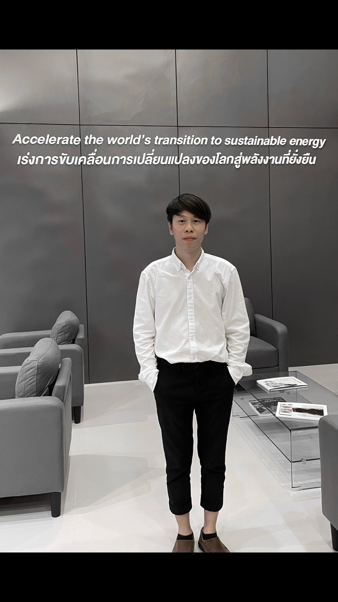

System Interfaces
ตัวอย่างผลงานการออกแบบ UI/UX โครงสร้างฐานข้อมูล และ Workflow สำหรับธุรกิจ

XPEL Management
.jpg)
RIZENIC Dashboard

TERN Logistic

รับผิดชอบการพัฒนาระบบเทคโนโลยีสารสนเทศ บริหารจัดการข้อมูล และปรับปรุงกระบวนการปฏิบัติงาน (Process Improvement) เพื่อสนับสนุนและขับเคลื่อน 3 ธุรกิจหลัก ได้แก่ XPEL, RIZENIC และ TERN Logistic
การยกระดับบทบาทจากผู้สนับสนุนการปฏิบัติงาน สู่การเป็นผู้ออกแบบและวางโครงสร้างระบบหลังบ้านเพื่อเพิ่มประสิทธิภาพองค์กร
Support vs Architecture
ตัวอย่างผลงานการออกแบบ UI/UX โครงสร้างฐานข้อมูล และ Workflow สำหรับธุรกิจ
XPEL Management
RIZENIC Dashboard
TERN Logistic
ข้อได้เปรียบจากการสร้างระบบให้องค์กรใช้งานตั้งแต่เริ่มต้นธุรกิจ (Day 1) เพื่อรากฐานที่แข็งแกร่ง
ระบบ Automation ทำหน้าที่จัดการข้อมูล ตัดสต็อก และทำรายงานแทนคน ลดความจำเป็นในการจ้างธุรการ (Admin) ช่วยให้องค์กรโตด้วยต้นทุนบุคลากรที่ต่ำลง
ข้อมูลยอดขาย สต็อก และ Capacity แสดงผลแบบ Real-Time ตั้งแต่วันแรก ช่วยผู้บริหารตัดสินใจและปรับกลยุทธ์ได้ทันที
ขจัดปัญหาข้อมูลหายหรือมาตรฐานไม่ตรงกัน ด้วย System Workflow ที่ควบคุมทุกสาขาเป็นมาตรฐานเดียว
System Value
แผนงานพัฒนาขีดความสามารถของระบบ เพื่อรองรับการเติบโตอย่างยั่งยืน
ย้ายฐานข้อมูลสู่ระบบ SQL เพื่อรองรับ Data ปริมาณมหาศาล
พัฒนาระบบ Business Intelligence เพื่อวิเคราะห์แนวโน้มธุรกิจ
แพลตฟอร์มให้ลูกค้าเช็คสิทธิประโยชน์และสถานะงานบริการ
ศึกษาการใช้ AI เพื่อแจ้งเตือนความผิดปกติและหาโอกาสธุรกิจใหม่
เปรียบเทียบโครงสร้างเงินเดือนปัจจุบัน กับมูลค่าที่แท้จริงของเนื้องานที่รับผิดชอบ
อ้างอิงฐานเงินเดือนในระดับ
Operation Support ทั่วไป
วิเคราะห์และออกแบบระบบ
พัฒนาแอปพลิเคชันและฐานข้อมูล
วาง Workflow ลดระยะเวลาการทำงาน
จากบทบาทที่เปลี่ยนแปลงจาก Operation Support สู่ Business Systems Analyst และผู้พัฒนาโครงสร้างพื้นฐานด้านข้อมูลขององค์กร จึงใคร่ขอรับการพิจารณาทบทวนโครงสร้างค่าตอบแทนให้สอดคล้องกับขอบเขตความรับผิดชอบ และมูลค่าทางธุรกิจที่ส่งมอบให้แก่องค์กรในปัจจุบัน (อ้างอิงเปรียบเทียบจากตาราง Market Benchmark ด้านบน)
ข้าพเจ้ายังมีแผนพัฒนาระบบในระยะถัดไป ทั้งด้าน SQL Database, Business Intelligence, Customer Portal และ AI Reporting เพื่อสนับสนุนการเติบโตของบริษัทในระยะยาว
30+ Files Consolidated
Warranty & Stock Automation
Management Dashboard
Operation Planning System